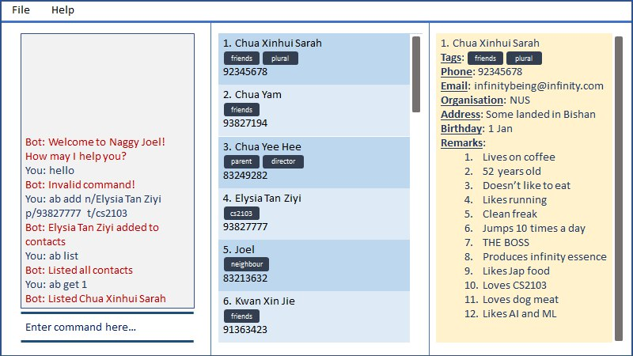

By: Team SE-EDU Since: Jun 2016 Licence: MIT
- 1. Introduction
- 2. Quick Start
- 3. Features
- 3.1. Viewing help :
help - 3.2. Adding a person:
add - 3.3. Listing all persons :
list - 3.4. Editing a person :
edit - 3.5. Adding tags to a person :
addtag - 3.6. Adding tags to a person :
rmtag - 3.7. Sort contacts:
sort - 3.8. Undo and redo commands:
undo/redo - 3.9. List everything about a contact in field:
get - 3.10. Store additional information about contacts using the Note Taker:
addnote - 3.11. Edit additional information about contacts
- 3.12. Delete additional information about contacts
- 3.13. Obtain gift suggestions for a particular contact using the Birthday Tracker (coming in v2.0)
- 3.14. Adds a new restaurant
- 3.15. Search:
search - 3.16. Add new assignment to the Schoolwork Tracker
- 3.17. List current assignments
- 3.18. Mark as completed
- 3.19. Delete assignment
- 3.20. Add person to assignment
- 3.21. Deleting a person :
delete - 3.22. Clearing all entries :
clear - 3.23. Exiting the program :
exit - 3.24. Saving the data
- 3.25. Encrypting data files
[coming in v2.0]
- 3.1. Viewing help :
- 4. FAQ
- 5. Command Summary
1. Introduction
AddressBook Level 3 (AB3) is for those who prefer to use a desktop app for managing contacts. More importantly, AB3 is optimized for those who prefer to work with a Command Line Interface (CLI) while still having the benefits of a Graphical User Interface (GUI). If you can type fast, AB3 can get your contact management tasks done faster than traditional GUI apps. Interested? Jump to the Section 2, “Quick Start” to get started. Enjoy!
2. Quick Start
-
Ensure you have Java
11or above installed in your Computer. -
Download the latest
addressbook.jarhere. -
Copy the file to the folder you want to use as the home folder for your Address Book.
-
Double-click the file to start the app. The GUI should appear in a few seconds.
 -
Type the command in the command box and press Enter to execute it.
e.g. typinghelpand pressing Enter will open the help window. -
Some example commands you can try:
-
list: lists all contacts -
addn/John Doe p/98765432 e/johnd@example.com a/John street, block 123, #01-01: adds a contact namedJohn Doeto the Address Book. -
delete3: deletes the 3rd contact shown in the current list -
exit: exits the app
-
-
Refer to Section 3, “Features” for details of each command.
3. Features
Command Format
-
Words in
UPPER_CASEare the parameters to be supplied by the user e.g. inadd n/NAME,NAMEis a parameter which can be used asadd n/John Doe. -
Items in square brackets are optional e.g
n/NAME [t/TAG]can be used asn/John Doe t/friendor asn/John Doe. -
Items with
… after them can be used multiple times including zero times e.g.[t/TAG]…can be used ast/friend,t/friend t/familyetc. -
Parameters can be in any order e.g. if the command specifies
n/NAME p/PHONE_NUMBER,p/PHONE_NUMBER n/NAMEis also acceptable.
3.1. Viewing help : help
Format: help
3.2. Adding a person: add
Adds a person to the address book
Format: ab add n/NAME p/PHONE_NUMBER [e/EMAIL] [a/ADDRESS] [t/TAG] [o/ORGANIZATION] [b/BIRTHDAY]
| A person can have any number of tags (including 0) BIRTHDAY must be written in a MM-DD format. Fields inside square brackets are optional. |
Examples:
-
ab add n/Akshay -
ab add n/Joel HH e/joel@yahoo.com.sg p/12345678 o/NUS a/Pasir Ris St. 71, Blk 123, #01-79 -
ab add n/Aisyle Nat e/aisyle@gmail.com p/87654321 o/NUS b/02-12 -
ab add n/ Benjamin t/CS2103
3.3. Listing all persons : list
Lists out all your contacts in the address book. Each contact will have a displayed index. Only lists the name, phone number and tags (if present)
Format: ab list [-g/GROUPNAME] [-n/WORD] [-t/TAG]
Examples:
* ab list -g/NUS -n/Lim
List all contacts that is in group “NUS” and have the word “Lim” in its name
3.4. Editing a person : edit
Edits an existing person in the address book.
Format: ab edit INDEX n/NAME p/PHONE_NUMBER [e/EMAIL] [a/ADDRESS] [t/TAG] [o/ORGANIZATION] [b/BIRTHDAY]
Examples:
-
ab edit 37 a/2 Cactus Road, S903281
Changes the 37th person’s address to 2 Cactus Road, S903281. -
ab edit 2 n/Elysia Tan o/Comp Club
Changes the second person’s name to Elysia Tan, and organization to Comp Club.
3.5. Adding tags to a person : addtag
Allows you to add additional tags to your contacts.
Format: ab addtag INDEX [t/TAG]
Examples:
-
ab addtag 37 t/noobAdds the tag “noob” to the person at index 37
3.6. Adding tags to a person : rmtag
Allows you to add additional tags to your contacts.
Format: ab rmtag INDEX [t/TAG]
Examples:
-
ab rmtag 37 t/noob
Removes the tag “noob” from the person at index 37
3.7. Sort contacts: sort
Displays the list of contacts in a certain sorted order
Format: ab sort [-f] [-o] [-b]
Examples:
* ab sort -a
Lists all contacts alphabetically
3.8. Undo and redo commands: undo/redo
Undoes and redoes the last command.
Format: undo/redo
3.9. List everything about a contact in field: get
Format: ab get INDEX
3.10. Store additional information about contacts using the Note Taker: addnote
Store additional information about contacts using the Note Taker
Format: ab addnote INDEX i/INFO1 i/INFO2 …
3.11. Edit additional information about contacts
Edit additional information about contacts using the Note Taker
Format: ab editnote INDEX [-l/LINE_NUMBER] i/INFO
3.12. Delete additional information about contacts
Delete additional information about contacts using the Note Taker
Format: ab deletenote INDEX [-l/LINE_NUMBER]
3.14. Adds a new restaurant
Adds a new restaurant
Format: rt add n/NAME [o/OPERATING_HOURS] [l/LOCATION] [p/PRICE_POINT] [c/CUISINE]
Examples:
-
rt add rubbish o/0900:23000 p/$$
Adds a new restaurant called rubbish with 2 dollar signs price point and opens form 9am to 11pm
3.15. Search: search
Search for restaurants based on a number of criteria.
Format: rt search [k/KEYWORD] [l/LOCATION] [p/PRICE_POINT] [o/OPERATING_HOURS]
Examples:
-
rt search k/no signboard p/$$
Searches for restaurants with the keyword no signboard which is at a medium price point. -
rt search l/bedok p/$
Searches for restaurants in the bedok area at a low price point.
3.16. Add new assignment to the Schoolwork Tracker
Adds a new assignment to your list of assignments and projects.
Format: st add t/TITLE d/DEADLINE e/ESTIMATED_COMPLETION_TIME
Examples:
-
st add t/CS2103 post lecture quiz d/20200211 2359 e/1
Adds an assignment titled CS2103 post lecture quiz to the Schoolwork Tracker, due 11-02-2020 23:59 and which takes an estimated one hour to complete.
3.17. List current assignments
Sorts the user’s list of assignments and displays them. This helps the user choose which assignment to do first. By default, it sorts the list in alphabetical order.
Format: st list [-d] [-e]
3.18. Mark as completed
Marks an assignment as completed.
Format: st done INDEX
3.19. Delete assignment
Deletes an assignment.
Format: st delete INDEX
3.20. Add person to assignment
Deletes an assignment.
Format: st addmem INDEX p/INDEX_1 p/INDEX_2 p/INDEX_3
3.21. Deleting a person : delete
Deletes the contact at index INDEX
Format: ab delete INDEX
Examples:
-
delete 2
Deletes the 2nd person in the address book.
3.22. Clearing all entries : clear
Clears all entries from the address book.
Format: clear
3.23. Exiting the program : exit
Exits the program.
Format: exit
3.24. Saving the data
Address book data are saved in the hard disk automatically after any command that changes the data.
There is no need to save manually.
3.25. Encrypting data files [coming in v2.0]
{explain how the user can enable/disable data encryption}
4. FAQ
Q: How do I transfer my data to another Computer?
A: Install the app in the other computer and overwrite the empty data file it creates with the file that contains the data of your previous Address Book folder.
5. Command Summary
-
Add
add n/NAME p/PHONE_NUMBER e/EMAIL a/ADDRESS [t/TAG]…
e.g.add n/James Ho p/22224444 e/jamesho@example.com a/123, Clementi Rd, 1234665 t/friend t/colleague -
Clear :
clear -
Delete :
delete INDEX
e.g.delete 3 -
Edit :
edit INDEX [n/NAME] [p/PHONE_NUMBER] [e/EMAIL] [a/ADDRESS] [t/TAG]…
e.g.edit 2 n/James Lee e/jameslee@example.com -
Find :
find KEYWORD [MORE_KEYWORDS]
e.g.find James Jake -
List :
list -
Help :
help